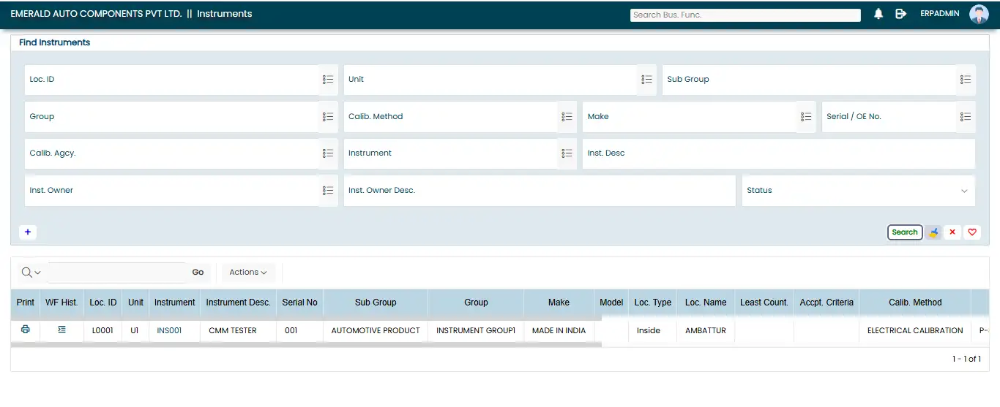
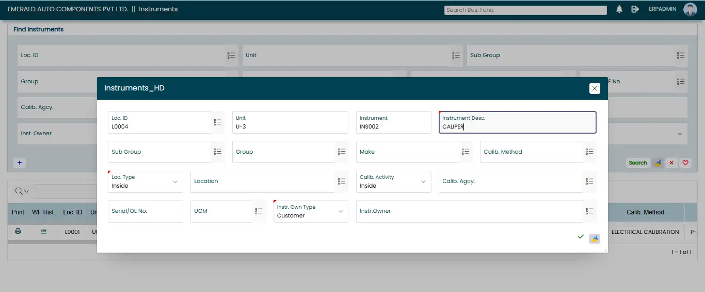
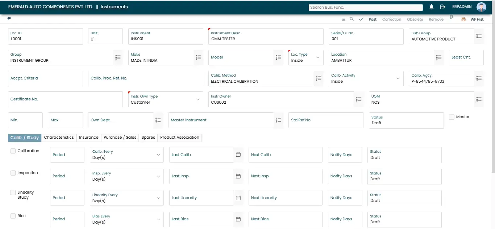
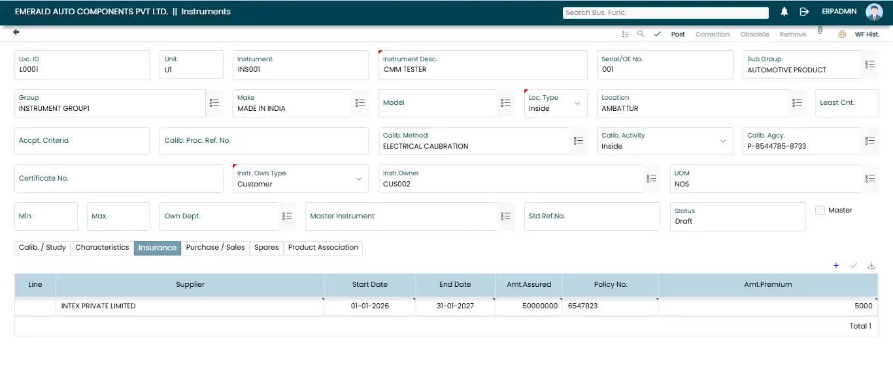
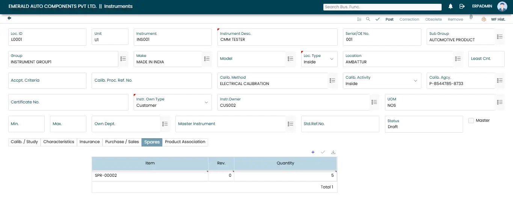

<div data-category="Quality control Management" data-title="Instruments" data-updated="December 01, 2025" data-contributors="RoadmapIT" data-breadcrumb="Home,Quality control Management,Instruments">
  <div class="page-content">
    <p>Instruments which are subjected to various types of study are created in the following screen.</p>

    <h5>Navigation Path</h5>
    <p class="fs-6">Quality Management \ Transactions \ Measurement System Analysis</p>

    
    <ul style="list-style-type: none; align-content: center">
      <li class="mouse-icon">Search screen displays the list of Instruments with relevant details and their status.</li>
      <li class="mouse-icon">User can filter the respective documents by entering the search parameters at the header.</li>
      <li class="mouse-icon">On clicking search button, system displays the results relevant to the search parameters entered.</li>
      <li class="mouse-icon">
        Using
        
        icon, entered search parameters can be cleared.
      </li>
      <li class="mouse-icon">
        To close the screen, use
        <i class="bi bi-x fs-4 mx-2 text-danger"></i>
        icon.
      </li>
      <li class="mouse-icon">
        Click the
        <i class="bi bi-plus fs-4 mx-2 text-primary"></i>
        Add button to create the instrument.
      </li>
    </ul>

    
    <ul style="list-style-type: none; align-content: center">
      <li class="mouse-icon">Enter/Select the Loc ID from LOV.</li>
      <li class="mouse-icon">Enter the Instrument Name and Description.</li>
      <li class="mouse-icon">Enter/Select the Instrument Sub Group and Group from LOV.</li>
      <li class="mouse-icon">Select the Make from LOV.</li>
      <li class="mouse-icon">Enter/Select the Instrument Location.</li>
      <li class="mouse-icon">Select the Calibration Method of the instrument from LOV.</li>
      <li class="mouse-icon">Location defaults to Inside, can be changed to Outside.</li>
      <li class="mouse-icon">Enter the Serial/OE. No.</li>
      <li class="mouse-icon">Select the Calibration Agency from LOV.</li>
      <li class="mouse-icon">Select the UOM/Range from LOV and enter the values.</li>
      <li class="mouse-icon">
        Click on
        <i class="bi bi-check-lg fs-4 mx-1 text-success"></i>
        to save.
      </li>
    </ul>

    
    <ul style="list-style-type: none; align-content: center">
      <li class="mouse-icon">Following studies are listed under the Calib./Study tab:</li>
      <ul class="mt-0">
        <li class="ps-0 ms-3">Calibration</li>
        <li class="ps-0 ms-3">Inspection</li>
        <li class="ps-0 ms-3">Linearity Study</li>
        <li class="ps-0 ms-3">Bias</li>
      </ul>
      <li class="mouse-icon">The instrument will be subjected to these studies sequentially.</li>
      <li class="mouse-icon">Status of document and study will initially be New.</li>
      <li class="mouse-icon">Select the required study.</li>
      <li class="mouse-icon">Enter the Period and select calibration duration (Year(s)/Month(s)/Day(s)/Week(s)).</li>
      <li class="mouse-icon">Enter the Last Calibration Date. Next Calibration Date is auto calculated.</li>
      <li class="mouse-icon">Enter Notify Days to indicate due days for next calibration.</li>
      <li class="mouse-icon">Characteristics of gauges are entered in the Characteristics tab.</li>
      <li class="mouse-icon">For Variable type, enter Value. For Attribute type, enter corresponding specification.</li>
    </ul>

    
    <ul style="list-style-type: none; align-content: center">
      <li class="mouse-icon">Enter the Supplier for Insurance details from LOV.</li>
      <li class="mouse-icon">Select Start Date and End Date for Insurance.</li>
      <li class="mouse-icon">Enter the Amount Assured.</li>
      <li class="mouse-icon">Enter the Policy Number.</li>
      <li class="mouse-icon">Enter the Insurance and Premium Amount.</li>
    </ul>

    
    <ul style="list-style-type: none; align-content: center">
      <li class="mouse-icon">Select the Item from LOV.</li>
      <li class="mouse-icon">For Sales, enter Sold Date and Sold To details.</li>
      <li class="mouse-icon">Enter Supplier Name and select PO Date of the instrument.</li>
      <li class="mouse-icon">Click on Post button to send the document for approval.</li>
      <li class="mouse-icon">Instruments can be set as Outdated using the Obsolete Button.</li>
      <li class="mouse-icon">Instruments can be moved to History using the Remove button.</li>
      <li class="mouse-icon">Status changes to In Use from New once gauge is activated.</li>
      <li class="mouse-icon">Document status is set to Obsolete when instrument is obsolete.</li>
    </ul>

    
    <ul style="list-style-type: none; align-content: center">
      <li class="mouse-icon">Spare parts required for gauges are selected from Item LOV.</li>
      <li class="mouse-icon">Description of the item auto-populates.</li>
      <li class="mouse-icon">Enter required quantity of spares.</li>
    </ul>

    <h2>Template</h2>
    <ul style="list-style-type: none; align-content: center">
      <li class="mouse-icon">
        Select the
        <i class="bi bi-download fs-5 mx-1 text-muted"></i>
        Download Template button.
      </li>
      <li class="mouse-icon">Enter Unit, Indtr. ID, Instrument Name, Sub Group, Group, Make, Model, Location, Calib. Method, Serial No, Calib Agency, Owner, UOM, Range Min, Range Max, Reference, Least Count, Accept Criteria.</li>
      <li class="mouse-icon">
        Click on
        <i class="bi bi-check-lg fs-4 mx-1 text-success"></i>
        to save the Template File.
      </li>
    </ul>
    <h2>upload</h2>
    <ul style="list-style-type: none; align-content: center">
      <li class="mouse-icon">
        Select the
        <i class="bi bi-upload fs-5 mx-1 text-muted"></i>
        Load button.
      </li>
      <li class="mouse-icon">Select the Template File.</li>
      <li class="mouse-icon">Select Open button to upload the filled template.</li>
    </ul>
  </div>
</div>
